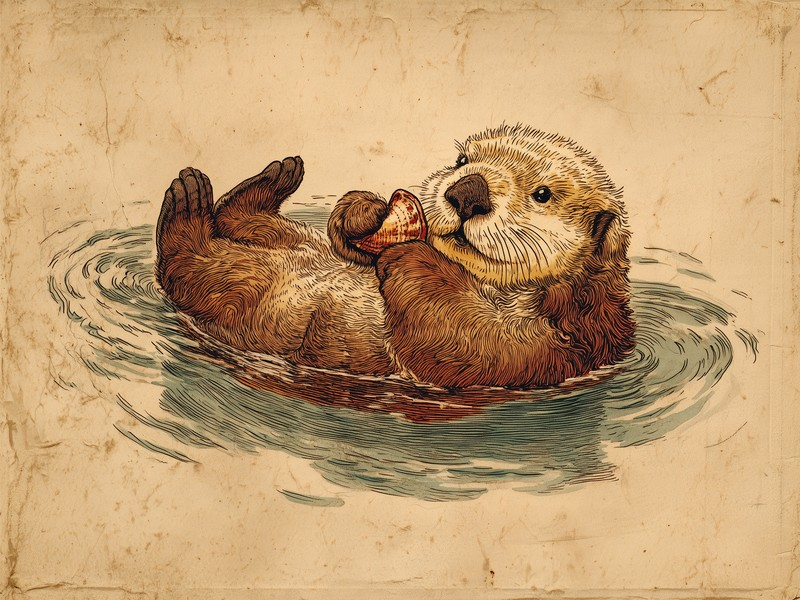

海獣なのに脂肪をため込めない、という体を張った「ざんねん」設計を、毛皮と大食いで力技カバー。 Why do sea otters have to eat so much? They're the only marine mammals with no blubber at all, so they burn through food just to stay warm.
海の哺乳類なのに、皮下脂肪がない
アザラシやクジラといった海の哺乳類は、冷たい海水の中でも体温を保てるよう、皮下脂肪と呼ばれる分厚い脂肪の層を体にまとっています。ところがラッコには、この皮下脂肪がほとんどありません。同じように冷たい海で暮らしているにもかかわらず、他の海獣たちが当たり前に備えている「天然の断熱材」を持たずに生まれてきたのです。冷たい水の中で暮らす動物としては、なんとも「ざんねん」な体のつくりと言わざるを得ません。
頼みの綱は、ダウンジャケットのような毛皮
皮下脂肪の代わりにラッコが頼っているのが、密度の高い二層構造の毛皮です。この毛皮は皮膚のすぐそばに空気の層を閉じ込める仕組みになっていて、ちょうどダウンジャケットを着ているように体を冷たい海水から守ってくれます。ただし、この毛皮には弱点があります。汚れたり毛が絡まったりすると水をはじく力が失われ、体がずぶ濡れになって断熱効果が一気に落ちてしまうのです。そのためラッコにとって、毛皮を清潔に保つ毛づくろいは欠かせない仕事になっています。一枚の上着に命を預けている、ちょっと「ざんねん」で健気な暮らしです。
体重の2〜3割を、ひたすら食べ続ける
脂肪をため込めないということは、エネルギーの蓄えがないということでもあります。ラッコは体温を生み出すために、常に大量のエネルギーを燃やし続けなければならず、その代謝量は非常に高くなっています。その結果、1日に食べる量はなんと自分の体重の2〜3割ほどにも達し、これはただ体を温めるためだけに費やされるものです。しかもこれだけ食べても、脂肪として蓄えることができないため太ることはなく、すべてが熱になって消えていきます。食べても食べても身につかない、なんとも「ざんねん」な燃費の体なのです。
ラッコといえば、手をつないで眠る姿が有名ですよね。野生では、寝ている間に流されないよう海面の昆布に体を巻きつけてから眠りますが、昆布のない水族館の水槽では、その代わりに仲間と手をつないだり、飼育員さんの手に手を伸ばしたりして流されないようにしているのだそうです。愛情表現というより流され防止の本能ですが、大食いに追われる「ざんねん」な日々の中で、その姿はやっぱりとびきり可愛らしく見えます。